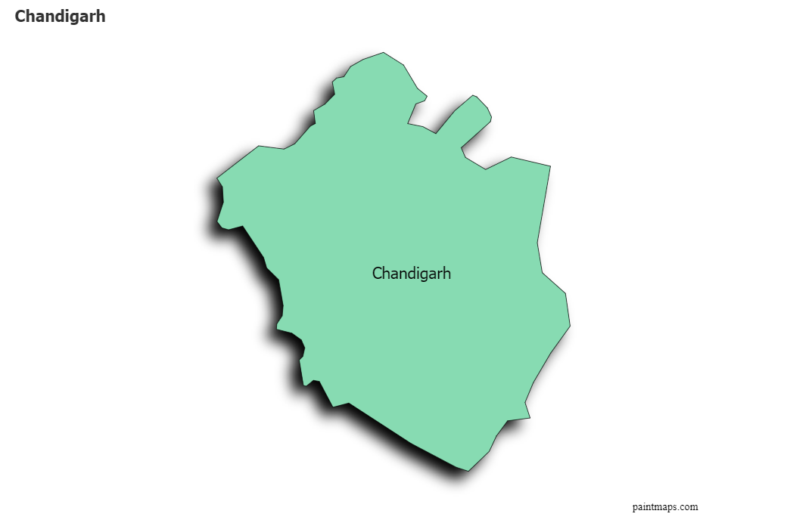
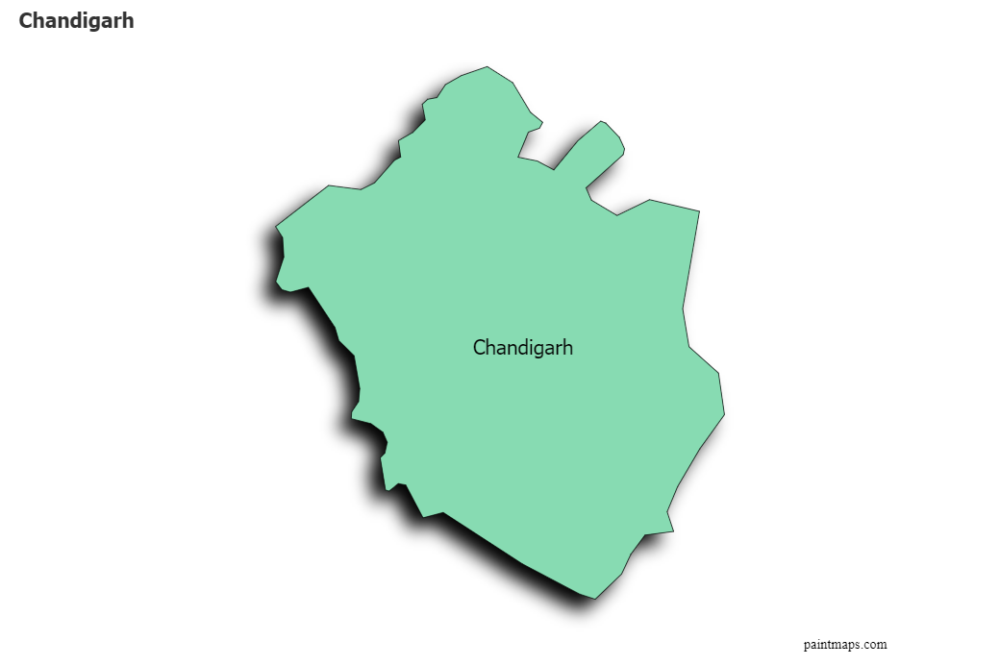

Chandigarh is a city and a union territory in northern India, serving as the capital for both Punjab and
Haryana. Its geographical location and urban planning make it a unique and significant area in India. Here
are some key aspects of Chandigarh’s geographical location:
1. Latitude and Longitude
- Chandigarh is located at approximately 30.7333° N latitude and 76.7794° E longitude. This positioning places it in the northwestern part of India.
2. Regional Boundaries
- Chandigarh is bordered by the state of Punjab to the north and west and Haryana to the south and east. This strategic location serves as a junction between these two states and enhances its importance as a capital city.
3. Proximity to Major Cities
- Chandigarh is well-connected to several major cities:
- Delhi: Approximately 250 kilometers (155 miles) to the southeast, making it easily accessible via road and rail.
- Ludhiana: About 100 kilometers (62 miles) to the northwest, a significant industrial city in Punjab.
- Ambala: Roughly 45 kilometers (28 miles) to the south, known for its military presence and historical significance.
.jpeg) 

4. Landscape and Terrain
- The city is situated at the foothills of the Shivalik Range, part of the lesser Himalayas, which adds to its scenic beauty. The terrain is mostly flat, but the surrounding hills provide a backdrop that enhances the city’s aesthetic appeal.
- Chandigarh is characterized by well-planned sectors, green spaces, and beautiful gardens, designed by the French architect Le Corbusier.
5. Climate
- Chandigarh experiences a humid subtropical climate with four distinct seasons:
- Summer (April to June): Hot and dry, temperatures can reach up to 40°C (104°F).
- Monsoon (July to September): Characterized by heavy rainfall and increased humidity.
- Winter (December to February): Cool and dry, with temperatures ranging from 5°C to 20°C (41°F to 68°F).
- Spring (March): Pleasant and mild, making it one of the best times to visit the city.
6. Natural Resources
- The region surrounding Chandigarh is rich in natural resources, particularly in agriculture. The fertile plains of Punjab and Haryana contribute to a robust agricultural economy.
7. Water Bodies
- Chandigarh is home to several artificial and natural water bodies, including Sukhna Lake, a man-made reservoir that serves as a recreational area for locals and tourists alike.
Conclusion
- Chandigarh's geographical location, nestled between Punjab and Haryana, its proximity to major urban centers, and its well-planned infrastructure contribute to its significance as a political, cultural, and economic hub in northern India. The city’s blend of natural beauty and modern urban planning makes it an attractive destination for residents and visitors alike.